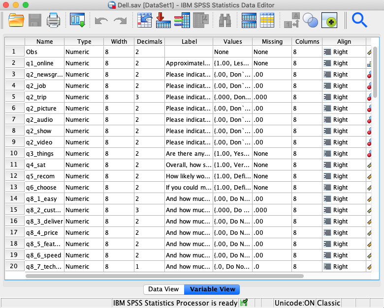

1 Getting started with SPSS
Data: Dell.sav (available on Moodle)
1.1 Learning objectives
The aim of this first lab exercise is to get you familiar with the SPSS program.
Learning objectives:
At the end of this lab, we hope that you will be able to:
Explore a data set and produce descriptive statistics in table format
Transfer tables into Word
In this lab we will use a data set from real customers that is available to download from Moodle. The data set contains information from 372 customers collected from a survey of purchasers of Dell PCs and notebooks. With this survey, Dell wants to understand their customers’ primary usage for internet and their customers’ satisfaction with their purchases. Customers also give information about their demographics such as age and gender. Your primary job today is to describe the characteristics of the sample.
1.2 Questionnaire and Data
Before opening that data and starting to analyse it, it is very important that you understand what was measured, how it was measured and as a result what level of measurement has been used. As we go on in the course it is very important to understand the distinctions between nominal, ordinal, interval, and ratio data.
Have a look at the questionnaire and identify which questions use a nominal, interval, and ratio scale.
1.3 Working with SPSS
Open the data file Dell.sav, which you must download from Moodle. You should save the data to your own drive and then double-click the file name from windows explorer.
There are two different views of the data which can be seen by clicking the bottom left tab. The data view shows the imputed data for each respondent (each row represents a respondent and each column represents a variable or questionnaire item). The variable view shows the detail of what has been measured. The key columns are the Name, Labels and Values columns which give the shortened variable name (e.g. see variable q2_job in the third row), the full details of what has been measured as a label (e.g. please indicate which of these you have ever done on the Internet: Looked for a job) and the Values represent what the imputed numbers represented in the questionnaire (e.g. 0 = “don’t know”, 1 = “looked for a job”, 2= don’t look for a job).


1.4 Creating Tables
I want you to try and use SPSS on your own (I will come around and answer questions that you have). You can explore the data set as much as you wish but here are some ideas of tables which might be interesting to explore.
1.5 Frequency Tables
This table allows you to explore only one variable in each table. Use the commands Analyze\(\rightarrow\)Descriptive statistics\(\rightarrow\)Frequencies. If you click on the Charts tab you can also get SPSS to generate bar, pie, and histograms for the variables selected.
Note that you can get many frequency tables in the one command by selecting multiple variables from the list of those available. To select more than one variable at a time keep the Ctrl button down. The frequency tables will be displayed in the output window.
Why not create a frequency table for the variables named q2_job, q2_trip?


Now, I want you to do more analysis to be able to answer the following questions:
1. What can you say about the sample regarding the distribution of the number of hours that customers spend online? (Q1)
2. What are the proportions of male and female in the sample? (Q14_gender)
3. What is the percentage of Dell customers in the sample who are willing to joint Dell loyalty program? (Q15_loyal)
1.6 Getting Help in SPSS
If you want to find out more about interpreting the frequency table, why not try using the Help tab? Select again Analyze\(\rightarrow\) Descriptive statistics \(\rightarrow\) Frequencies, and click on the Help tab at the bottom. You will find that a new window opens up and provides useful information. SPSS also has a range of support features which can be found using the Help menu. Spend some time looking through the options of particular interest maybe the Statistics Coach, Tutorials and Case Studies – you can click this link Getting help - IBM documentation, which directly take you to the online help page of SPSS ver. 30.
1.7 Cross Tabulations
What are the proportions of male vs. female that are willing to join Dell loyalty program? To answer this question, you need to do cross tabulations. Use the commands Analyze\(\rightarrow\)Descriptive statistics\(\rightarrow\)Crosstabs.
Crosstabs are used to explore the relationship between two categorical variables (e.g., nominal by nominal, nominal vs. ordinal). Use the cells tab to select row or column percentages in order to be able to compare across the groups. The type of percentage will depend on what basis you want to compare i.e. whether the rows or the columns should add to 100%. Note that you can also produce graphs (by checking the Display clustered bar charts option).
What about exploring the relationship between gender and level of education?
1.8 Copying SPSS output into word
For reports or as a record of what analysis you have done you may want to put your charts and tables into an MS Word document. This is straight forward, all you need to do is position the cursors on the SPSS output (chart or table) and right click, select copy and paste the table or graph into your MS Word document.
1.9 Codebook
If you use a paper-and-pencil survey, you need to enter the data manually. Before you enter the data into an SPSS data view window, I recommend that you create a codebook in advance. A codebookt contains names and descriptions of variables and coding for response answers including missing values, which is built directly from your questionnaire. A codebook is very useful and handy to place on your desk when you are working on your data where you quickly check the variables that you use, and communicate the SPSS outputs to your team members.
I also recommend that you also create a codebook when you use an online survey (e.g., https://lancasteruni.eu.qualtrics.com. Online surveys like qualtrics.com enable you to import data into an SPSS format (.sav). However, you may need to clean this data before you can use it (you may not need to do so if you want a quick report). For instance, the column label in the SPSS variable view window will be written by the software automatically. When you have a codebook, you can leave this column as blank and adjust the variable names as the way they are written in your codebook.
Example of a codebook
| Variable | Construct | Statement | Response | Source |
|---|---|---|---|---|
| q1_online | Amount of hours spent online | Approximately how many hours per week do you spend online? (This would be the total from all the locations you might use) | 1= Less than 1 hour 2=1-5 hours 3=6-10 hours 4=11-20 hours 5=21-40 hours 6=41 hours more 99=Missing values |
Self-developed |
| … | … | … | … | |
| q4_sat | Satisfaction Overall | How satisfied are you with your DELL computer system? | 1= Very dissatisfied 2 = Somewhat dissatisfied 3 = Somewhat satisfied 4 = Very satisfied 99 = Missing values |
Adapted from Oliver(1993) |